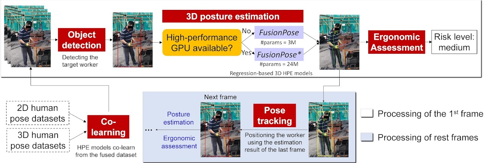

Research
Research Grants
- Additional Funding from RGC for Supporting Research Needs of HKPFS Awardees in 2024/25: Simulation, Quantification, and Optimization for Dynamic High-Capacity Ride-Sharing Services. 40,000 HKD, Jul. 2024–Jul. 2026. (PI)
- HKU Research Postgraduate Student Innovation Award 2024/25: A multiagent-based simulation platform for urban mobility in the autonomous driving era. 50,000 HKD, Jan. 2025–Dec. 2025. (PI)
- Tsinghua University Initiative Scientific Research Program: Assessment method research on seismic resilience of urban coupled infrastructure systems. 10,000 CNY, Dec. 2019–Dec. 2020. (PI)
- Tsinghua University Undergraduate Summer Scientific Research Program: Sound source localization based on deep learning. 5,000 CNY, June. 2020–Sep. 2020. (PI)
- Tsinghua University Initiative Scientific Research Program: Assessment of wind-induced damage to the Tsinghua campus based on GIS and CFD. 30,000 CNY, Dec. 2018–Dec. 2019 (PI)
Research Areas
Shared mobility
- We developed HRSim, an agent-based simulation platform, that can simulate large-scale high-capacity ride-sharing services in real time.
- We aim to explore the logic and social welfare of shared mobility services.
Real-time assessment for construction
- We present a novel framework for real-time ergonomic risk assessment of workers in construction environments.
